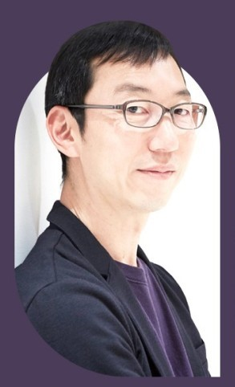

책소개
철학은 어떻게 삶의 무기가 되는가
오늘 나의 문제를 해결해 주는 강력한 지적 무기, 철학을 말하다! 한치 앞을 알 수 없는 오늘을 사는 우리에게 가장 필요한 무기는 무엇일까?
누구보다 비즈니스 현장에서 철학을 유용하게 사용해 온 사람으로, 경영학 학위, MBA도 없이 세계 1위 경영·인사 컨설팅 기업 콘페리헤이그룹의 임원 자리에 오른 야마구치 슈가 『철학은 어떻게 삶의 무기가 되는가』에서 삶의 무기가 되어주는 철학에 대해 이야기한다.
불확실한 시대에 불분명한 문제들과 싸워야 하는 우리가 철학을 배워야 하는 것은 철학자들의 생각법이 오늘날에도 여전히 유효하기 때문이다.
저자는 자신이 MBA를 취득하지 않았지만 전략과 온갖 숫자가 난무하는 컨설팅 업계에서 살아남을 수 있었던 것도 오로지 철학 덕분이라고 말하며, 우리가 일상에서 가장 빈번하게 부딪치는 주제인 사람, 조직, 사회, 사고 네 가지 콘셉트에 따라 철학·사상을 정리해 보여준다.
오늘 나의 문제를 해결해 주는 강력한 지적 무기, 철학을 말하다! 한치 앞을 알 수 없는 오늘을 사는 우리에게 가장 필요한 무기는 무엇일까?
누구보다 비즈니스 현장에서 철학을 유용하게 사용해 온 사람으로, 경영학 학위, MBA도 없이 세계 1위 경영·인사 컨설팅 기업 콘페리헤이그룹의 임원 자리에 오른 야마구치 슈가 『철학은 어떻게 삶의 무기가 되는가』에서 삶의 무기가 되어주는 철학에 대해 이야기한다.
불확실한 시대에 불분명한 문제들과 싸워야 하는 우리가 철학을 배워야 하는 것은 철학자들의 생각법이 오늘날에도 여전히 유효하기 때문이다.
저자는 자신이 MBA를 취득하지 않았지만 전략과 온갖 숫자가 난무하는 컨설팅 업계에서 살아남을 수 있었던 것도 오로지 철학 덕분이라고 말하며, 우리가 일상에서 가장 빈번하게 부딪치는 주제인 사람, 조직, 사회, 사고 네 가지 콘셉트에 따라 철학·사상을 정리해 보여준다.
작가소개

저자 : 아마구치슈
세계 1위 경영·인사 컨설팅펌 콘페리헤이그룹의 시니어 파트너. 게이오 대학교 철학과를 졸업하고 동 대학원 미학미술사 석사 과정을 수료했다.
일본 최대 광고 회사 덴쓰(電通)를 시작으로 보스턴컨설팅그룹(Boston Consulting Group)과 AT 커니(A.T. Kearney)를 거쳐 조직 개발, 혁신, 인재 육성, 리더십 분야의 전문 컨설턴트로 자리매김했다. 현장에서 철학적 사고로 문제를 해결해 온 경험을 살려 유수의 비즈니스 스쿨에서 ‘지적 생산 기술’, ‘지적 전략’을 가르쳐 왔다. 2,000명이 넘는 기업인이 그의 강의를 들었고 이 강의를 통해 인문 지식을 현업에 적용할 수 있게 되었다고 극찬했다.
현재 콘페리헤이그룹(Korn Ferry Hay Group)의 시니어 파트너이자 히토쓰바시 대학교 경영관리연구과 겸임교수로 일하며 저서로는 《그들은 어떻게 지적 성과를 내는가》, 《세계의 리더들은 왜 직감을 단련하는가》, 《읽는 대로 일이 된다》 등이 있다.
세계 1위 경영·인사 컨설팅펌 콘페리헤이그룹의 시니어 파트너. 게이오 대학교 철학과를 졸업하고 동 대학원 미학미술사 석사 과정을 수료했다.
일본 최대 광고 회사 덴쓰(電通)를 시작으로 보스턴컨설팅그룹(Boston Consulting Group)과 AT 커니(A.T. Kearney)를 거쳐 조직 개발, 혁신, 인재 육성, 리더십 분야의 전문 컨설턴트로 자리매김했다. 현장에서 철학적 사고로 문제를 해결해 온 경험을 살려 유수의 비즈니스 스쿨에서 ‘지적 생산 기술’, ‘지적 전략’을 가르쳐 왔다. 2,000명이 넘는 기업인이 그의 강의를 들었고 이 강의를 통해 인문 지식을 현업에 적용할 수 있게 되었다고 극찬했다.
현재 콘페리헤이그룹(Korn Ferry Hay Group)의 시니어 파트너이자 히토쓰바시 대학교 경영관리연구과 겸임교수로 일하며 저서로는 《그들은 어떻게 지적 성과를 내는가》, 《세계의 리더들은 왜 직감을 단련하는가》, 《읽는 대로 일이 된다》 등이 있다.
목차
프롤로그 교양이 없는 전문가보다 위험한 존재는 없다
1부 무기가 되는 철학
철학을 배우는 새로운 방법
왜 철학 앞에서 좌절하는가?
2부 지적 전투력을 극대화하는 50가지 철학·사상
1장 ‘사람’에 관한 핵심 콘셉트 - 왜 이 사람은 이렇게 행동할까?
01 타인의 시기심을 관찰하면 비즈니스 기회가 보인다 : 프리드리히 니체_르상티망
02 우리는 모두 가면을 쓰고 살아간다 : 카를 구스타프 융_페르소나
03 성과급으로 혁신을 유도할 수 있을까? : 에드워드 데시_예고된 대가
04 사람은 논리만으로 움직이지 않는다 : 아리스토텔레스_수사학
05 노력하면 구원받을 수 있다고 신은 말하지 않았다 장 칼뱅_예정설
06 타고난 능력이란 없다, 경험을 통해 인간은 무엇이든 될 수 있다 : 존 로크_타불라 라사
07 자유는 견디기 어려운 고독과 통렬한 책임을 동반한다 : 에리히 프롬_자유로부터의 도피
08 불확실한 것에 매력을 느끼는 인간의 본성 : 버러스 프레더릭 스키너_대가
09 인생을 예술 작품으로 대한다면 : 장 폴 사르트르_앙가주망
10 악의가 없어도 누구나 악인이 될 수 있다 : 한나 아렌트_악의 평범성
11 자아실현을 이룬 사람일수록 인맥이 넓지 않다 : 에이브러햄 매슬로_자아실현적 인간
12 행동을 정당화하기 위해 기꺼이 생각을 바꾸는 사람들 : 리언 페스팅어_인지 부조화
13 개인의 양심은 아무런 힘이 없다 : 스탠리 밀그램_권위에의 복종
14 언제 일에서 만족감을 느낄 수 있을까? : 미하이 칙센트미하이_몰입
2장 ‘조직’에 관한 핵심 콘셉트 - 왜 이 조직은 바뀌지 않을까?
15 뛰어난 리더의 조건 : 니콜로 마키아벨리_마키아벨리즘
16 끝까지 이의를 제기하는 사람이 있는가? : 존 스튜어트 밀_악마의 대변인
17 붕괴된 가족과 공동체의 새로운 대안 : 페르디난트 퇴니에스_게마인샤프트와 게젤샤프트
18 혁신은 새로운 시도가 아닌 과거와의 작별에서 시작한다 : 쿠르트 레빈_변화 과정
19 권위를 만드는 세 가지 요소 : 막스 베버_카리스마
20 이해할 수 없는 사람과 함께 일해야만 하는 이유 : 에마뉘엘 레비나스_타자의 얼굴
21 가난한 사람은 더 가난해지고 부유한 사람은 더 부유해진다 : 로버트 킹 머튼_마태 효과
22 협조할 것인가, 배신할 것인가 : 존 내시_내시 균형
23 왜 기장이 조종할 때 사고 발생 확률이 더 높을까? : 헤이르트 호프스테더_권력 거리
24 안정이 계속될수록 축적되는 리스크 : 나심 니콜라스 탈레브_반反취약성
3장 ‘사회’에 관한 핵심 콘셉트 - 지금 무슨 일이 일어나고 있는가?
25 어떻게 시스템은 인간을 소외시키는가 : 카를 마르크스_소외
26 독재에 의한 질서 vs. 자유가 있는 무질서 : 토머스 홉스_리바이어던
27 구글은 민주주의의 수호자가 될 수 있을까? : 장 자크 루소_일반의지
28 머리로 생각할 수 있는 최적의 방법에는 한계가 있다 : 애덤 스미스_보이지 않는 손
29 돌연변이가 발생하는 것은 자연스러운 일이다 : 찰스 다윈_자연도태
30 업무 방식 개혁 앞에 놓인 무서운 미래 : 에밀 뒤르켐_아노미
31 경제학으로 설명되지 않는 새로운 관계 : 마르셀 모스_증여
32 성 편견으로부터 얼마나 자유로운가? : 시몬 드 보부아르_제2의 성
33 재빨리 도망칠 줄 아는 사람이 승리한다 : 질 들뢰즈_파라노이아와 스키조프레니아
34 공평한 사회일수록 차별에 의한 상처가 깊다 : 세르주 모스코비치_격차
35 감시당하고 있다는 심리적 압박 : 미셸 푸코_패놉티콘
36 사람들은 필요해서가 아니라 다르게 보이기 위해 돈을 쓴다 : 장 보드리야르_차이적 소비
37 보이지 않는 노력도 언젠가는 보상받는다는 거짓말 : 멜빈 러너_공정한 세상 가설
4장 ‘사고’에 관한 핵심 콘셉트 - 어떻게 사고의 함정에 빠지지 않을 수 있을까?
38 ‘결국 이런 뜻이죠?’라고 말하면 안 되는 이유 : 소크라테스_무지의 지
39 이상은 이상일 뿐, 환상에 사로잡히지 말지어다 : 플라톤_이데아
40 오해에는 여러 유형이 있다 : 프랜시스 베이컨_우상
41 생각은 아웃소싱할 수 없다 : 르네 데카르트_코기토
42 진보는 나선형 발전으로 이루어진다 : 게오르크 헤겔_변증법
43 사고의 폭을 넓히고 싶다면 어휘력을 길러라 : 페르디낭 드 소쉬르_시니피앙과 시니피에
44 때로는 판단을 보류하는 것이 도움이 된다 : 에드문트 후설_에포케
45 과학적인 것이 꼭 옳은 것은 아니다 : 카를 포퍼_반증 가능성
46 에디슨은 축음기를 유언장의 대체품으로 발명했다 : 클로드 레비스트로스_브리콜라주
47 조급해하지 마라, 세상은 그렇게 갑자기 바뀌지 않는다 : 토머스 쿤_패러다임 전환
48 이분법을 넘어서라 : 자크 데리다_탈구축
49 미래를 예측하는 최선의 방법은 미래를 창조하는 것이다 : 앨런 케이_미래 예측
50 사람은 뇌뿐만 아니라 몸으로도 생각한다 : 안토니오 다마지오_신체적 표지
역자 후기 칸트와 스피노자 없이 철학을 이야기하는 법
출판사 서평
★★★ 일본 아마존 인문·교양 베스트셀러 ★★★
“왜 세계 최고의 리더들은 철학 공부에 기꺼이 시간을 내는가?”
세계적인 경영 세미나로 손꼽히는 미국 아스펜 연구소의 경영자 세미나는 세미나 시작 3개월 전에 보내 주는 500페이지가 넘는 철학 자료를 다 읽어야만 참석할 수 있다.
세미나에 참석한 글로벌 리더들은 일주일 동안 모두 휴대전화를 끄고 플라톤, 마키아벨리, 홉스, 로크, 루소 등 철학 고전을 배운다. 기업 경영에 중요한 결정을 내리는 것만으로도 시간이 모자란 리더들이 철학 공부에 기꺼이 시간을 내는 이유는 무엇일까?
오늘날 기업 경영의 가장 큰 화두는 ‘혁신’이다. 이를 위해 많은 기업이 직원들에게 ‘상식을 의심하라’고 말하는데 정말 우리에게 필요한 것은 상식을 의심하는 태도가 아니라 그냥 넘어가도 좋은 상식과 의심해야 하는 상식을 판별할 줄 아는 안목이다.
이 안목을 길러주는 것이 바로 철학이다.
과거 철학자들이 세상과 인간을 향해 던졌던 질문을 통해서 지금 눈앞에 닥친 상황을 냉철하게 분석하는 스마트한 생각의 기술을 배울 수 있다. 불확실한 시대에 불분명한 문제들과 싸워야 하는 것은 현대인의 숙명이다. 더 이상 얄팍한 처세나 임기응변으로는 버틸 수 없다는 뜻이다.
철학을 배워서 얻는 가장 큰 소득은 지금 눈앞에서 벌어지고 있는 일을 깊이 있게 통찰하고 해석하는 데 필요한 열쇠를 얻을 수 있다는 것이다.
이것이야말로 한 치 앞을 알 수 없는 오늘을 사는 우리에게 가장 필요한 무기가 아닐까?
“철학은 반드시 답을 찾는다!”
2천여 명의 CEO가 극찬한 세상에서 가장 쓸모 있는 인문학 경영학 학위, MBA도 없이 세계 1위 경영·인사 컨설팅 기업 콘페리헤이그룹의 임원 자리에 오른 사람이 있다.
바로 『철학은 어떻게 삶의 무기가 되는가』의 저자 야마구치 슈다. 그는 누구보다 비즈니스 현장에서 철학을 유용하게 사용해 온 사람으로, 자신이 철학을 전공하고 MBA도 보유하지 않았음에도 경영 전략과 온갖 숫자가 난무하는 컨설팅 업계에서 살아남을 수 있었던 것은 오로지 철학이 그의 무기가 되어 주었기 때문이라고 말한다.
경영 전반에 걸친 문제를 해결해야 할 때마다 상황을 철학이나 심리학, 경제학 개념에 대입해 보면 언제나 해결의 실마리가 보였다.
비즈니스 모델을 찾을 때는 니체의 ‘르상티망’을 이용해 타인의 시기심에서 기회를 찾아보았고, 새로운 제도를 정착시키는 방법을 모색할 때는 레빈의 ‘변화 과정’을, 적은 비용으로 만족할 만한 솔루션을 얻고 싶을 때는 스미스의 ‘보이지 않는 손’을 들여와 휴리스틱을 적용했다.
실제로 저자는 유수의 비즈니스 스쿨에서 이 같은 내용을 담은 ‘지적 전략’에 대한 강의를 해 왔는데 지금까지 2천여 명이 넘는 기업인이 그의 강의를 들었으며 일본 경제를 움직이는 리더들로부터 세상에서 가장 쓸모 있는 인문학 강의라는 극찬을 받았다.
이를 통해 그동안 철학이 현실 세계와 동떨어진 이야기라는 오명을 쓴 이유가 사람들이 철학과 비즈니스를 연결하여 생각할 줄 몰랐기 때문이라고 생각한 저자는 자신이 현장에서 유용하게 사용한 철학·사상 중 50개를 엄선하여 『철학은 어떻게 삶의 무기가 되는가』에 담았다.
현실에 단단히 발붙이고 서서 철학 개념을 끌어와 새로운 관점을 제시하는 이 책은 생생한 사례와 깊이 있는 통찰로 그 어떤 책보다 실용적인 철학 사용법을 제시하며 독자들은 새로운 철학의 세계로 안내한다.
“이제 철학이 당신의 경쟁력이 된다”
일상의 고민에서 비즈니스 전략까지, 지적 전투력을 극대화하는 철학적 사고법 누구나 한 번쯤 철학을 공부하려고 책을 펼쳤다가 고대 철학자들의 고리타분하고 진부하게 느껴지는 주장 앞에서 좌절한 경험이 있을 것이다.
‘세상은 네 가지 원소로 이루어져 있다’는 철학자의 주장을 읽으면 자연스레 “도대체 이런 건 배워서 어디에 써먹나?” 하는 생각이 들기 때문이다.
사실 많은 철학자들의 주장은 과학이 발전하면서 틀렸거나 당연한 이야기로 증명되고 말았다. 그럼에도 불구하고 우리가 철학을 배워야 하는 것은 그들의 생각법이 오늘날에도 여전히 유효하기 때문이다.
기원전 6세기의 아낙시만드로스라는 철학자가 주장한 ‘지구는 허공에 떠 있다’는 주장은 우리에게 너무나도 당연한 이야기다. 하지만 그가 살았던 시대에는 ‘물이 대지를 받치고 있다’는 것이 정론이었다.
통용되는 상식을 그대로 받아들이지 않았던 아낙시만드로스는 ‘대지를 물이 지지하고 있다면 그 물을 지지하는 것은 무엇일까?’라는 의문을 품고 그것을 증명하기 위해 끊임없이 고찰한 결과 ‘지구는 허공에 떠 있다’라는 주장을 내 놓았다.
본질을 꿰뚫고 최적의 솔루션을 찾아내는 철학적 사고법은 어느 시대에나 유용하다. 철학자들이 결론에 이르기까지의 사고 과정과 문제를 대하는 자세를 따라가다 보면 어느 새 불확실한 삶을 돌파하는 생각 도구들을 손에 쥐게 될 것이다.
『철학은 어떻게 삶의 무기가 되는가』는 철학을 다루는 책이지만 결국 우리의 일과 삶의 문제에 대해 말하는 책이다. 철학을 시대순으로 소개하지 않고, 우리가 일상에서 가장 빈번하게 부딪치는 주제인 사람, 조직, 사회, 사고 네 가지 콘셉트에 따라 큐레이션한 것도 그 때문이다.
이 책을 통해 더 이상 철학이 고상한 문제에만 매달리는 나와 먼 이야기가 아니라 오늘 나의 문제를 해결해 주는 가장 강력한 지적 무기라는 것을 확인한다면 독자들은 삶의 모든 영역에서 지적 전투력을 극대화하는 방법을 깨닫게 될 것이다.
“왜 세계 최고의 리더들은 철학 공부에 기꺼이 시간을 내는가?”
세계적인 경영 세미나로 손꼽히는 미국 아스펜 연구소의 경영자 세미나는 세미나 시작 3개월 전에 보내 주는 500페이지가 넘는 철학 자료를 다 읽어야만 참석할 수 있다.
세미나에 참석한 글로벌 리더들은 일주일 동안 모두 휴대전화를 끄고 플라톤, 마키아벨리, 홉스, 로크, 루소 등 철학 고전을 배운다. 기업 경영에 중요한 결정을 내리는 것만으로도 시간이 모자란 리더들이 철학 공부에 기꺼이 시간을 내는 이유는 무엇일까?
오늘날 기업 경영의 가장 큰 화두는 ‘혁신’이다. 이를 위해 많은 기업이 직원들에게 ‘상식을 의심하라’고 말하는데 정말 우리에게 필요한 것은 상식을 의심하는 태도가 아니라 그냥 넘어가도 좋은 상식과 의심해야 하는 상식을 판별할 줄 아는 안목이다.
이 안목을 길러주는 것이 바로 철학이다.
과거 철학자들이 세상과 인간을 향해 던졌던 질문을 통해서 지금 눈앞에 닥친 상황을 냉철하게 분석하는 스마트한 생각의 기술을 배울 수 있다. 불확실한 시대에 불분명한 문제들과 싸워야 하는 것은 현대인의 숙명이다. 더 이상 얄팍한 처세나 임기응변으로는 버틸 수 없다는 뜻이다.
철학을 배워서 얻는 가장 큰 소득은 지금 눈앞에서 벌어지고 있는 일을 깊이 있게 통찰하고 해석하는 데 필요한 열쇠를 얻을 수 있다는 것이다.
이것이야말로 한 치 앞을 알 수 없는 오늘을 사는 우리에게 가장 필요한 무기가 아닐까?
“철학은 반드시 답을 찾는다!”
2천여 명의 CEO가 극찬한 세상에서 가장 쓸모 있는 인문학 경영학 학위, MBA도 없이 세계 1위 경영·인사 컨설팅 기업 콘페리헤이그룹의 임원 자리에 오른 사람이 있다.
바로 『철학은 어떻게 삶의 무기가 되는가』의 저자 야마구치 슈다. 그는 누구보다 비즈니스 현장에서 철학을 유용하게 사용해 온 사람으로, 자신이 철학을 전공하고 MBA도 보유하지 않았음에도 경영 전략과 온갖 숫자가 난무하는 컨설팅 업계에서 살아남을 수 있었던 것은 오로지 철학이 그의 무기가 되어 주었기 때문이라고 말한다.
경영 전반에 걸친 문제를 해결해야 할 때마다 상황을 철학이나 심리학, 경제학 개념에 대입해 보면 언제나 해결의 실마리가 보였다.
비즈니스 모델을 찾을 때는 니체의 ‘르상티망’을 이용해 타인의 시기심에서 기회를 찾아보았고, 새로운 제도를 정착시키는 방법을 모색할 때는 레빈의 ‘변화 과정’을, 적은 비용으로 만족할 만한 솔루션을 얻고 싶을 때는 스미스의 ‘보이지 않는 손’을 들여와 휴리스틱을 적용했다.
실제로 저자는 유수의 비즈니스 스쿨에서 이 같은 내용을 담은 ‘지적 전략’에 대한 강의를 해 왔는데 지금까지 2천여 명이 넘는 기업인이 그의 강의를 들었으며 일본 경제를 움직이는 리더들로부터 세상에서 가장 쓸모 있는 인문학 강의라는 극찬을 받았다.
이를 통해 그동안 철학이 현실 세계와 동떨어진 이야기라는 오명을 쓴 이유가 사람들이 철학과 비즈니스를 연결하여 생각할 줄 몰랐기 때문이라고 생각한 저자는 자신이 현장에서 유용하게 사용한 철학·사상 중 50개를 엄선하여 『철학은 어떻게 삶의 무기가 되는가』에 담았다.
현실에 단단히 발붙이고 서서 철학 개념을 끌어와 새로운 관점을 제시하는 이 책은 생생한 사례와 깊이 있는 통찰로 그 어떤 책보다 실용적인 철학 사용법을 제시하며 독자들은 새로운 철학의 세계로 안내한다.
“이제 철학이 당신의 경쟁력이 된다”
일상의 고민에서 비즈니스 전략까지, 지적 전투력을 극대화하는 철학적 사고법 누구나 한 번쯤 철학을 공부하려고 책을 펼쳤다가 고대 철학자들의 고리타분하고 진부하게 느껴지는 주장 앞에서 좌절한 경험이 있을 것이다.
‘세상은 네 가지 원소로 이루어져 있다’는 철학자의 주장을 읽으면 자연스레 “도대체 이런 건 배워서 어디에 써먹나?” 하는 생각이 들기 때문이다.
사실 많은 철학자들의 주장은 과학이 발전하면서 틀렸거나 당연한 이야기로 증명되고 말았다. 그럼에도 불구하고 우리가 철학을 배워야 하는 것은 그들의 생각법이 오늘날에도 여전히 유효하기 때문이다.
기원전 6세기의 아낙시만드로스라는 철학자가 주장한 ‘지구는 허공에 떠 있다’는 주장은 우리에게 너무나도 당연한 이야기다. 하지만 그가 살았던 시대에는 ‘물이 대지를 받치고 있다’는 것이 정론이었다.
통용되는 상식을 그대로 받아들이지 않았던 아낙시만드로스는 ‘대지를 물이 지지하고 있다면 그 물을 지지하는 것은 무엇일까?’라는 의문을 품고 그것을 증명하기 위해 끊임없이 고찰한 결과 ‘지구는 허공에 떠 있다’라는 주장을 내 놓았다.
본질을 꿰뚫고 최적의 솔루션을 찾아내는 철학적 사고법은 어느 시대에나 유용하다. 철학자들이 결론에 이르기까지의 사고 과정과 문제를 대하는 자세를 따라가다 보면 어느 새 불확실한 삶을 돌파하는 생각 도구들을 손에 쥐게 될 것이다.
『철학은 어떻게 삶의 무기가 되는가』는 철학을 다루는 책이지만 결국 우리의 일과 삶의 문제에 대해 말하는 책이다. 철학을 시대순으로 소개하지 않고, 우리가 일상에서 가장 빈번하게 부딪치는 주제인 사람, 조직, 사회, 사고 네 가지 콘셉트에 따라 큐레이션한 것도 그 때문이다.
이 책을 통해 더 이상 철학이 고상한 문제에만 매달리는 나와 먼 이야기가 아니라 오늘 나의 문제를 해결해 주는 가장 강력한 지적 무기라는 것을 확인한다면 독자들은 삶의 모든 영역에서 지적 전투력을 극대화하는 방법을 깨닫게 될 것이다.